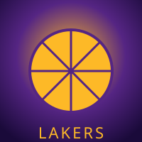
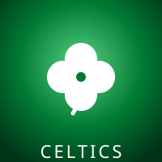
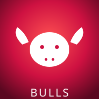
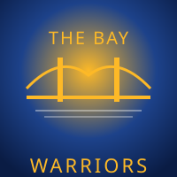

Los Angeles Lakers
Casa lui Magic Johnson, Kareem Abdul-Jabbar, Shaquille O'Neal si Kobe Bryant. Era "Showtime" a anilor '80 si dinastia anilor 2000 sunt momente de varf in istoria sportului.
17Titluri
32Finale
Cele mai cunoscute franchize-uri NBA — fiecare cu identitatea, culorile si trofeele ei.

Casa lui Magic Johnson, Kareem Abdul-Jabbar, Shaquille O'Neal si Kobe Bryant. Era "Showtime" a anilor '80 si dinastia anilor 2000 sunt momente de varf in istoria sportului.

Cea mai titrata echipa din istoria NBA. Bill Russell, Larry Bird, Kevin Garnett, Paul Pierce, Jayson Tatum — generatii de campioni. Rivalitatea cu Lakers e legendara.

Dinastia anilor '90 cu Michael Jordan — 6 titluri in 8 ani. Echipa care a globalizat baschetul. "The Last Dance" 97-98 ramane unul dintre cele mai discutate sezoane din istoria sportului.

4 titluri in ultima decada cu Stephen Curry, Klay Thompson si Draymond Green. "Splash Bros" au transformat aruncarea de 3 puncte intr-o arma principala. 5 finale consecutive (2015-2019).
5 titluri NBA cu Tim Duncan, Tony Parker si Manu Ginobili. Cea mai consistenta franchiza din NBA — 20+ sezoane consecutive in playoffs. Acum cu Wembanyama, viitor stralucit.
3 titluri NBA — cu Wade-Shaq (2006), apoi "The Big Three" Wade-LeBron-Bosh (2012, 2013). "Heat Culture" — efort maxim, organizatie disciplinata.
Barele se animeaza cand le vezi pe ecran — comparatie vizuala a echipelor.